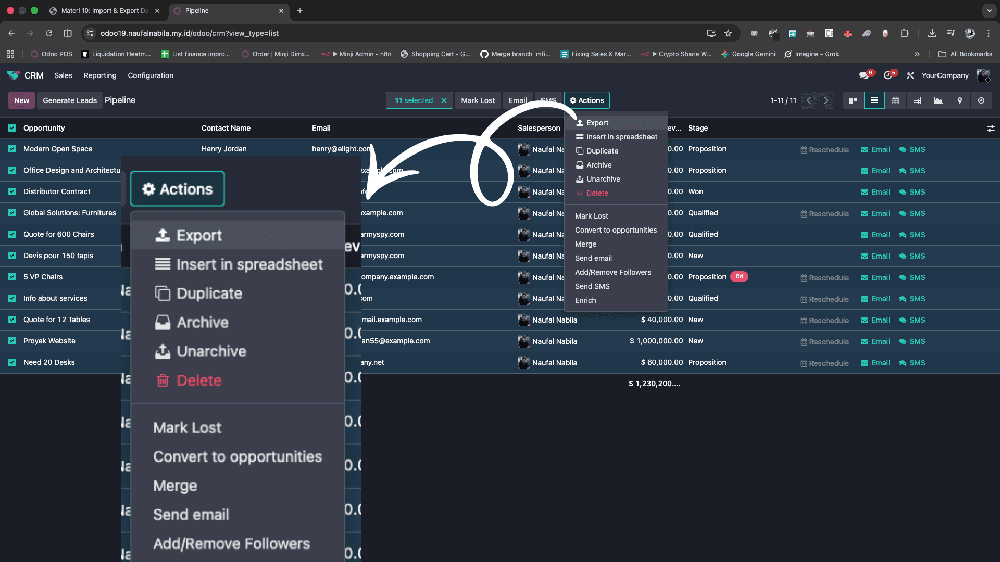

Anda dapat mengekspor data dari Odoo ke dalam file Excel (.xlsx) atau CSV. Ini sangat berguna untuk reporting atau ketika Anda ingin memindahkan data ke sistem lain.
Caranya:
- Buka List View (tampilan daftar) untuk data yang ingin diekspor (misal: Contacts).
- Centang kotak (checkbox) di samping nama record yang ingin dipilih.
- Tombol Actions (ikon gerigi) akan muncul di tengah atas. Klik tombol tersebut.
- Pilih menu Export.

📸 Screenshot: Tombol Actions > Export